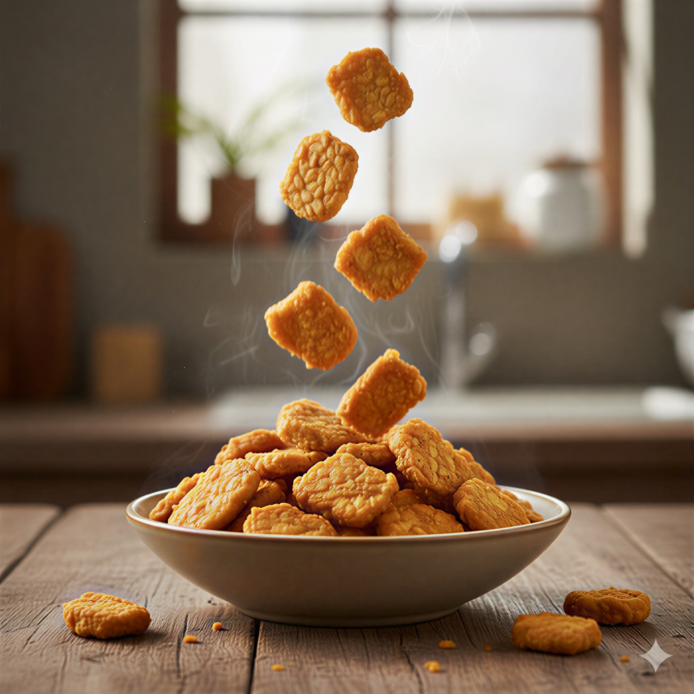

Selamat datang kepada website saya, di website ini kalian bisa melihat penelitian tentang pembuatan tempe. Tempe adalah salah satu makanan tradisional di Indonesia. Tempe banyak disukai oleh masyarakat Indonesia karena harga yang murah, rasa yang enak, dan mudah dicari.

Pada proses pembuatan tempe, langkah paling utama adalah fermentasi kacang kedelai. Bahan utama dalam fermentasi adalah kacang kedelai dan mikroorganisme Rhizopus sebagai kapang tempe. Fermentasi kacang kedelai harus memperhatikan lama waktu dan jenis kapang yang digunakan supaya bisa menghasilkan tempe yang berkualitas. Selain itu juga harus memperhatikan kebersihan dalam pengerjaan dan tempat penyimpanan saat fermentasi.